|
|
|
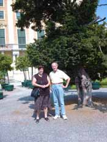
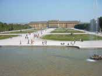
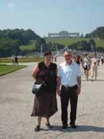
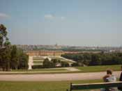
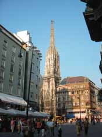
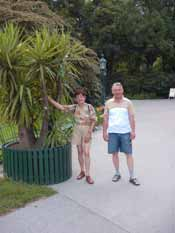
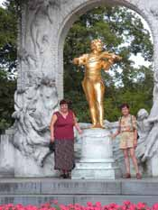
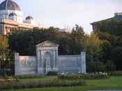
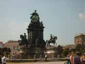
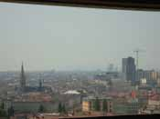
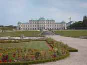
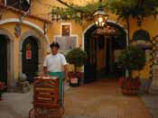
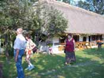
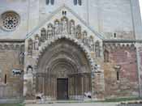
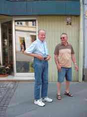
|
2003
Karli und Angelika in 2003 Wien Leo und Angelika lernten sich während der Rheinreise seines Urgroßvaters kennen. Sie half ihm viele Missverständnisse zwischen ihnen aufzuräumen. Dabei hatten sie auch viel Spaß miteinander. Nachdem die Chemie zwischen ihnen stimmte und die Rheinreise genau zum 100. Geburtstag seines Vaters vollendet war, beschloss er, sie – obgleich reiner Salzburger mit thüringischer Abkunft – in die Gegenwart des Urenkels mit den Worten „schau mir in die Augen, Kleines !“ ins schnöde Wien einzuladen. Und siehe da, nach langem Geziere und von ihrem Ehemann positiv unterstützt, entschied sie sich zu dem Sprung ins kalte Wasser. Als sie hier ankamen und ich den riesigen Korb mit Fressalien sah, den sie mitgebracht hatte, beschloss ich ihr zu zeigen, dass wir genug zu Essen haben, und machte zum Schnitzel noch eine Fuhr Reis. Dann ging´s in die City. Stephansdom, Kapuzinergruft, Franziskanerkirche, Kärntnerstrasse. Daheim legte Karli bald die Hände an die Hosennaht. Am Abend hatten wir noch einen schönen Blick über das beleuchtete Wien vom Kahlenberg und Leopoldsberg. Am nächsten Tag waren Karli und Angelika mit Leo in Schönbrunn. Als sie am späten Nachmittag braungebrannt wieder erschienen, stand ich bleich in der Küche und versuchte, zum Tafelspitz eine Sauce zu kreieren, damit die Thüringer Erdäpfelknödel dazu passten. Leo´s „das ist aber nicht typisch wienerisch !“ trug ihm einen erbitterten Blick von mir ein. Am Samstag gingen wir zum Flohmarkt und über den Naschmarkt. An der Sezession vorbei, zum Museumsquartier. Von dort in den Maria-Theresienpark, wo Angelika den Eingang des Kunsthistorischen Museums benützte, um ihre Füße hoch zu lagern. Dann stieß Leo zu uns und wir gingen zum Heldenplatz, von dort in die Schatzkammer. Anschließend war am Heldenplatz ein Blasmusiktreffen. Ich fuhr heim, um den am Naschmarkt gekauften Spargel vor dem Austrocknen zu retten. Die drei besuchten noch die Nationalbibliothek. Am Sonntag fuhren wir in´s Burgenland, weil ich meine Rosenblüte nicht versäumen wollte. Am Nachmittag bei Platzregen in´s Bildeiner Geschichtenhaus. Am Montag ging´s zuerst nach Güssing und auf die Burg, aber die hatte geschlossen. So fuhren wir nach Gerersdorf, wo die strohgedeckten Häuser wieder aufgebaut worden waren. Anschließend gab´s ein gutes Essen im Schwabenhof, und dann ging´s zu anderen alten Häusern nach Heiligenbrunn, wo uns ein alter Bildeiner auf ein Glas Wein einlud. Am Abend hat uns Karli mit dem Griller verwöhnt. Am Dienstag fuhren wir nach Ungarn. Zuerst besichtigten alle die älteste romanische Kirche in Yak, dann fuhren wir nach Szombathely (Steinamanger). Als Leo einen Polizisten nach dem Heimweg fragte, fuhren wir mit Polizeieskorte fast wieder zur österreichischen Grenze. Karli und ich saßen im Auto immer hinten. Aber Wuschl war es gewöhnt, alleine auf seinen Decken zu liegen. Wenn also einer eingestiegen war, verteidigte Wuschl die andere Hälfte des Sitzes, indem er sich flach niederlegte und schwer machte. Aber dann haben wir ihn doch überrumpelt. Auf mein Kommando „Karli, los !“rissen wir beide die Autotüren auf und sprangen von beiden Seiten gleichzeitig hinein. Der erschrockene Hund machte sich in der Mitte ganz schmal. Am Mittwoch fuhren wir nach Graz, bummelten durch die Altstadt, und nach dem Mittagessen fuhren wir auf den Schlossberg zum Uhrturm. Am Abend gab es wieder Gegrilltes. Wir hatten ja Karli. Da die Rosen zu verblühen drohten, fuhren wir am Donnerstag wieder nach Wien. Am Nachmittag besuchten wir den Alpengarten (alles abgeblüht) und das Belvedere, den Schwarzenbergplatz mit Hochstrahlbrunnen und Russendenkmal, den Stadtpark mit dem Straußdenkmal, den Burggarten mit dem Mozartdenkmal. Angelika und ich stellten uns bei jedem Denkmal als Fotomotiv zur Verfügung. Als wir das beim Mozartdenkmal auch tun wollten, ließ Karli seinen Charme spielen, indem er sagte: „Ihr braucht Euch da nicht hinzustellen, Ihr seid schon zu müde !“. Es hat ihm nichts geholfen, wir posierten. Am Freitag waren wir im Prater und in den Praterauen, aßen im Jägerhaus und spazierten anschließend zur Donau, was Leo zu einem Gemurmel über „Gewaltmarsch“ und „Quälerei“ veranlasste. Dann fuhren wir mit der Straßenbahn zum Schwedenplatz und anschließend nach Grinzing. Bei einem Terrassenheurigen ließen wir den Tag ausklingen. Am Samstag erklommen Angelika und Karli den Stephansdom, während ich in der kühlen Kirche wartete. Dann machten wir noch einen kleinen Bummel durch die Stadt zum Basiliskenhaus und zur alten Universitätskirche. Zuhause machte Angelika einen köstlichen Salzbraten, von dem sie sehr enttäuscht war, und Leo einen nicht thüringischen Erdäpfelsalat. Spät am Abend fuhrt Ihr ab, nachdem Karli für mehrere Stunden die Hände an die Hosennaht gelegt hatte. Es war eine schöne Zeit mit Euch, lustig und stimmig. Wir bedanken uns noch einmal für die vielen Geschenke (auch wenn sehr viel Papier dabei war) ! Wir hoffen, es hat Euch auch gefallen.
Alles Liebe, 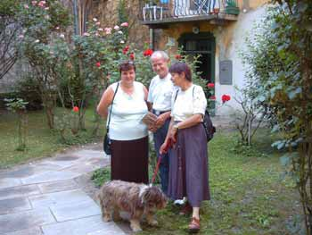
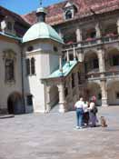
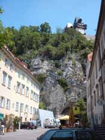 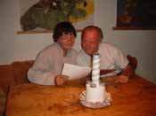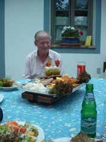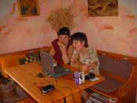
28.05. - 10.06.2003
|